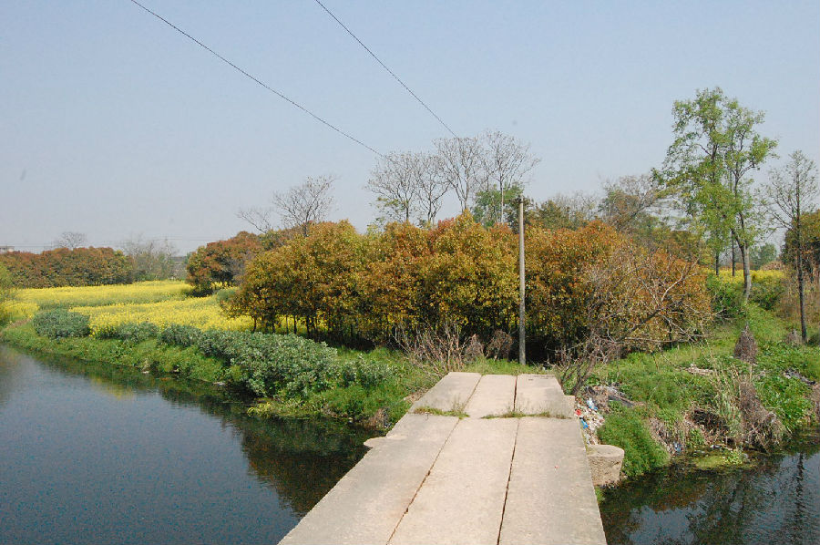

嘉兴市文物保护网 · 市级文物保护点 · 2020-11-09 · 原文

刘家坟遗址位于嘉兴市南湖区新丰镇横港村石缺组。四周环河，南为姚花港，东为东青龙港，西接刘家坟水泥桥，南连广福桥，为新石器时代良渚文化至春秋战国时期聚落址。遗址面积约75000平方米，曾出土较多的陶片和石器。下层为良渚时期文化层，有泥质灰陶，陶质比较松软，上层多为印纹陶，陶片较硬，纹饰为绳纹、方格纹等，该遗址分布范围较大，延续时间较长，文化遗迹较丰富，有较高的历史和科学价值。1992年公布为嘉兴市级文物保护点。